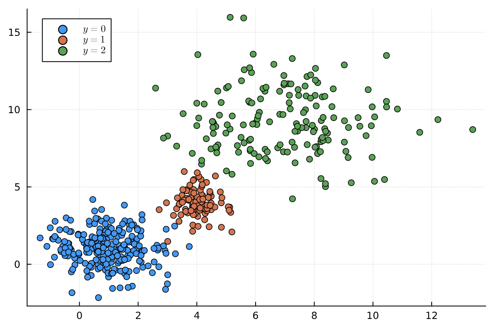
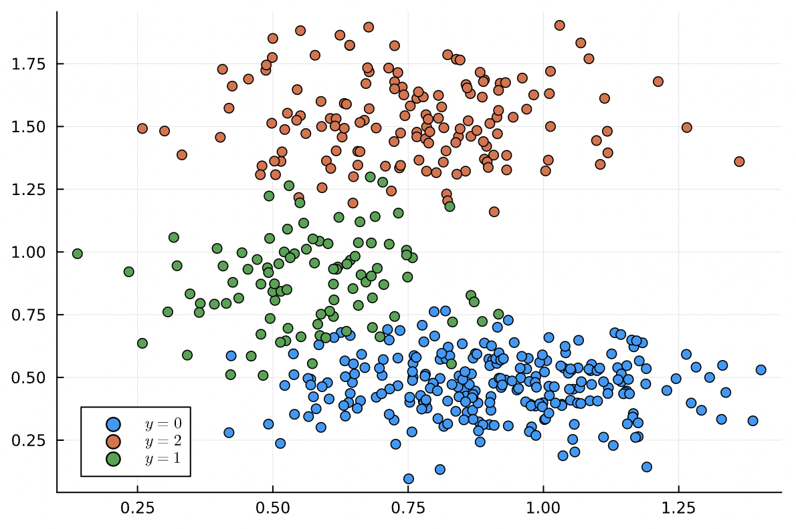

Extras
Generate Imbalanced Data
Imbalance.generate_imbalanced_data — Functiongenerate_imbalanced_data(
num_rows, num_continuous_feats;
means=nothing, min_sep=1.0, stds=nothing,
num_vals_per_category = [],
class_probs = [0.8, 0.2],
type= "ColTable", insert_y= nothing,
rng= default_rng(),
)Generate num_rows observations with target y respecting given probabilities of each class. Supports generating continuous features with a specific mean and variance and categorical features given the number of levels in each variable.
Arguments
num_rows::Integer: Number of observations to generatenum_continuous_feats::Integer: Number of continuous features to generatemeans::AbstractVector=nothing: A vector of means for each continuous feature (must be as long asnum_continuous_feats). Ifnothing, then will be set randomlymin_sep::AbstractFloat=1.0: Minimum distance between any two randomly chosen means. Will have no effect if the means are given.stds::AbstractVector=nothing: A vector of standard deviations for each continuous feature (must be as long asnum_continuous_feats). Ifnothing, then will be set randomlynum_vals_per_category::AbstractVector=[]: A vector of the number of levels of each extra categorical feature. the number of categorical features is inferred from this.class_probs::AbstractVector{<:AbstractFloat}=[0.8, 0.2]: A vector of probabilities of each class. The number of classes is inferred from this vector.type::AbstractString="ColTable": Can be"Matrix"or"ColTable". In the latter case, a named-tuple of vectors is returned.insert_y::Integer=nothing: If not nothing, insert the class labels column at the given index in the tablerng::Union{AbstractRNG, Integer}=default_rng(): Random number generator. If integer then used asseedinRandom.Xoshiro(seed)if the JuliaVERSIONsupports it. Otherwise, uses Random.MersenneTwister(seed).
Returns
X:: A column table or matrix with generated imbalanced data withnum_rowsrows andnum_continuous_feats + length(num_vals_per_category)columns. Ifinsert_yis specified as in integer thenyis also inserted at the specified index as an extra column.y::CategoricalArray: An abstract vector of class labels with labels $0$, $1$, $2$, ..., $k-1$ wherek=length(class_probs)
Example
using Imbalance
using Plots
num_rows = 500
num_features = 2
# generating continuous features given mean and std
X, y = generate_imbalanced_data(
num_rows,
num_features;
means = [1.0, 4.0, [7.0 9.0]],
stds = [1.0, [0.5 0.8], 2.0],
class_probs=[0.5, 0.2, 0.3],
type="Matrix",
rng = 42,
)
p = plot()
[scatter!(p, X[:, 1][y.==yi], X[:, 2][y.==yi], label = "$y=yi$") for yi in unique(y)]
julia> plot(p)
# generating continuous features with random mean and std
X, y = generate_imbalanced_data(
num_rows,
num_features;
min_sep=0.3,
class_probs=[0.5, 0.2, 0.3],
type="Matrix",
rng = 33,
)
p = plot()
[scatter!(p, X[:, 1][y.==yi], X[:, 2][y.==yi], label = "$y=yi$") for yi in unique(y)]
julia> plot(p)
num_rows = 500
num_features = 2
X, y = generate_imbalanced_data(
num_rows,
num_features;
num_vals_per_category = [3, 5, 2],
class_probs=[0.9, 0.1],
insert_y=4,
type="ColTable",
rng = 33,
)
julia> X
(Column1 = [0.883, 0.9, 0.577 … 0.887,],
Column2 = [0.578, 0.718, 0.378 … 0.573,],
Column3 = [2.0, 2.0, 3.0, … 2.0,],
Column4 = [0.0, 0.0, 0.0, … 0.0,],
Column5 = [2.0, 3.0, 4.0, … 4.0,],
Column6 = [1.0, 1.0, 2.0, … 1.0,],)Check Balance of Data
Imbalance.checkbalance — Functioncheckbalance(y; reference="majority")A visual version of StatsBase.countmap that returns nothing and prints how many observations in the dataset belong to each class and their percentage relative to the size of majority or minority class.
Arguments
y::AbstractVector: A vector of categorical values to test for imbalancereference="majority": Either"majority"or"minority"and decides whether the percentage should be relative to the size of majority or minority class.
Example
num_rows = 50000
num_features = 2
X, y = generate_imbalanced_data(
num_rows,
num_features;
class_probs=[0.8, 0.2],
type="Matrix",
rng = 42,
)
julia> Imbalance.checkbalance(y; ref="majority")
1: ▇▇▇▇▇▇▇▇▇▇▇▇▇ 10034 (25.1%)
0: ▇▇▇▇▇▇▇▇▇▇▇▇▇▇▇▇▇▇▇▇▇▇▇▇▇▇▇▇▇▇▇▇▇▇▇▇▇▇▇▇▇▇▇▇▇▇▇▇▇▇ 39966 (100.0%)
julia> Imbalance.checkbalance(y; ref="minority")
1: ▇▇▇▇▇▇▇▇▇▇▇▇▇ 10034 (100.0%)
0: ▇▇▇▇▇▇▇▇▇▇▇▇▇▇▇▇▇▇▇▇▇▇▇▇▇▇▇▇▇▇▇▇▇▇▇▇▇▇▇▇▇▇▇▇▇▇▇▇▇▇ 39966 (398.3%)